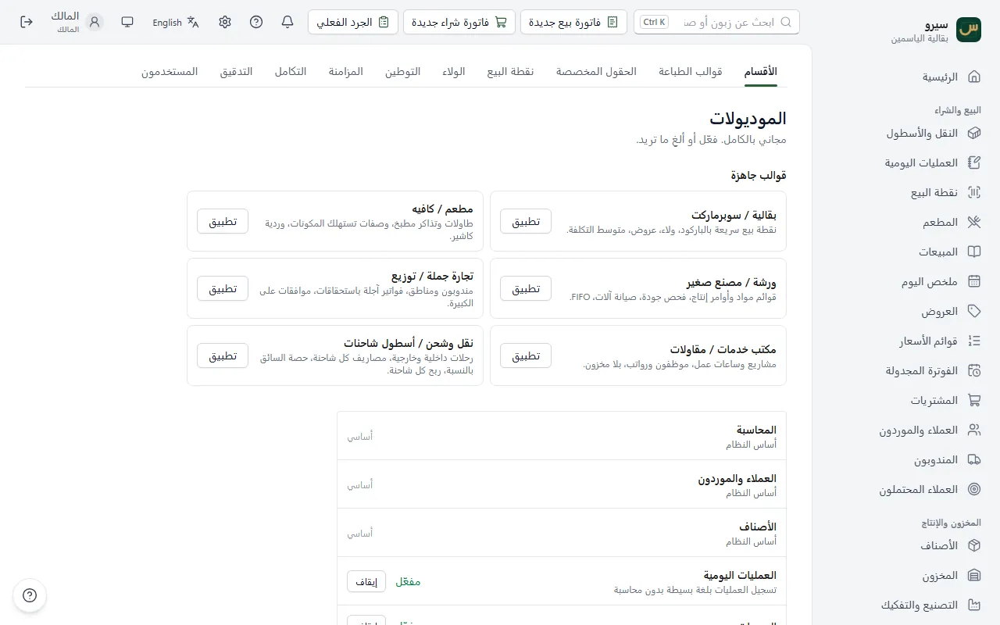
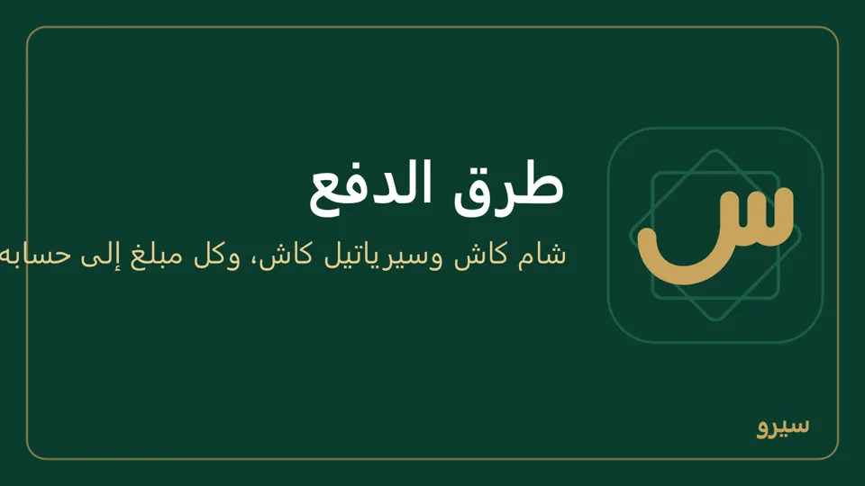
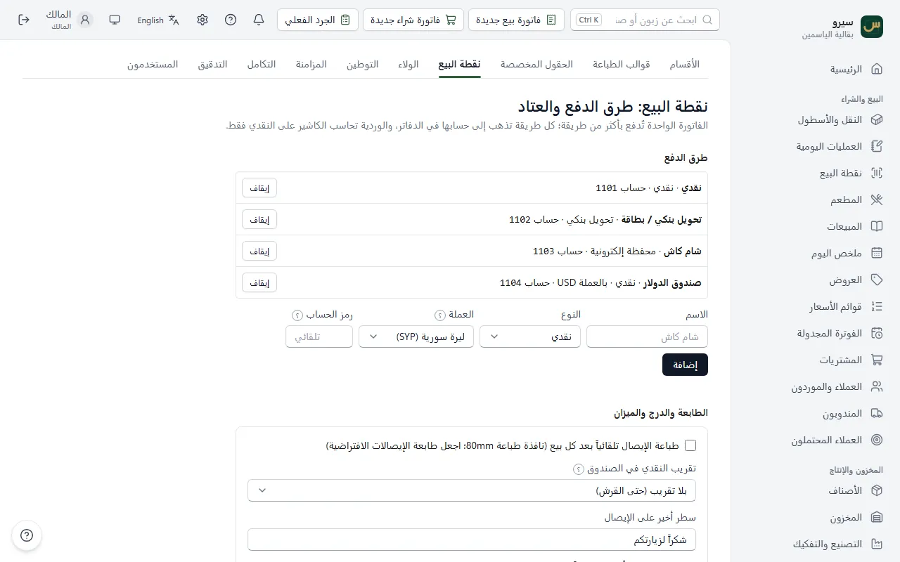
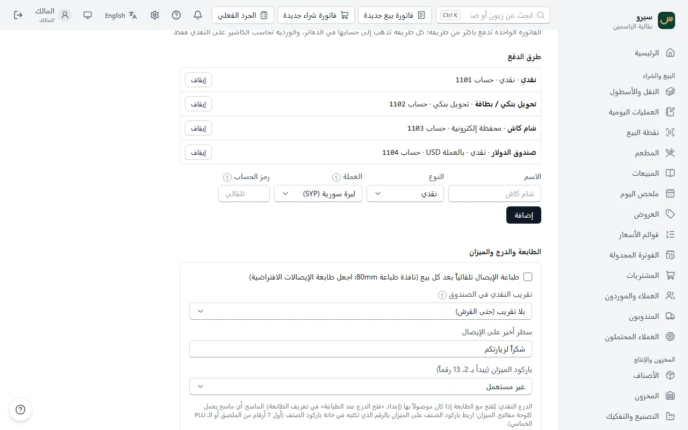
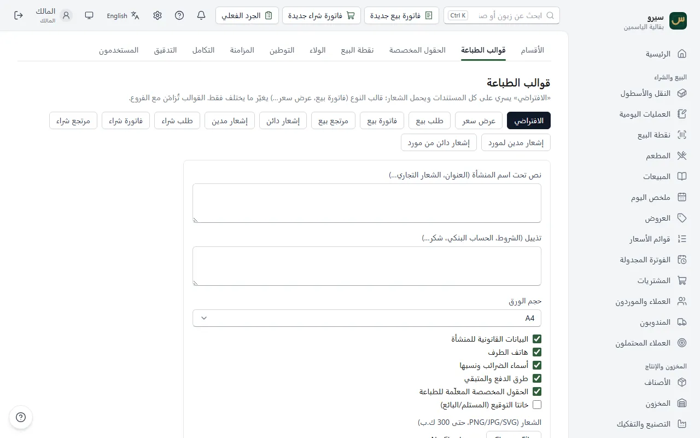
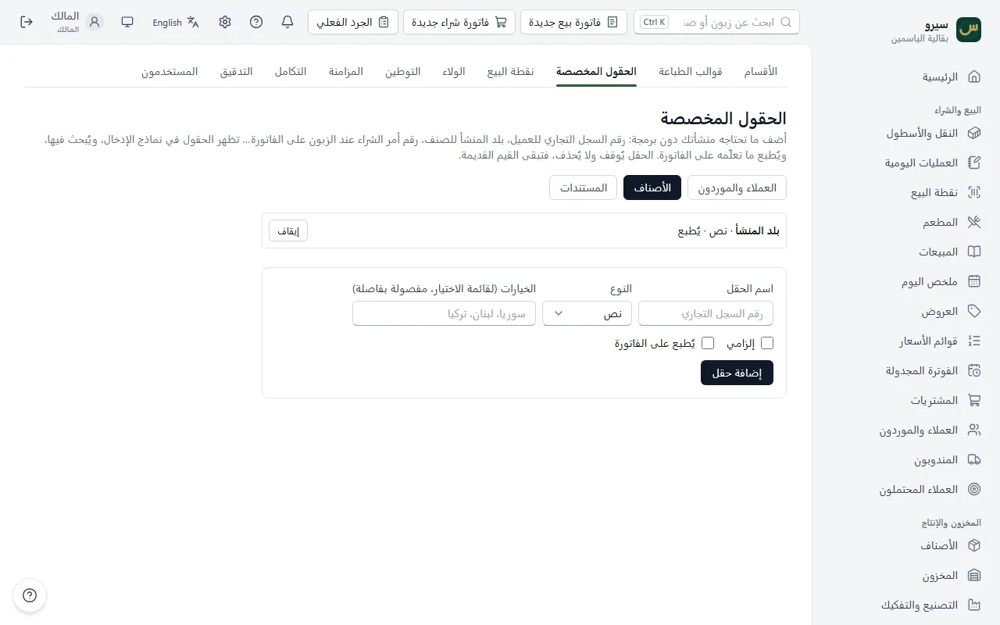
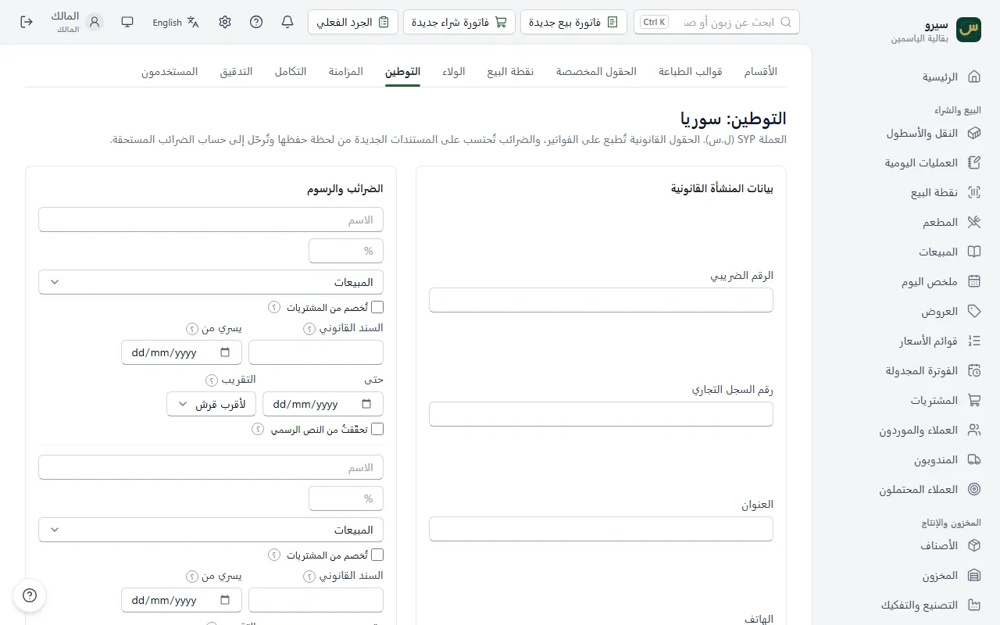
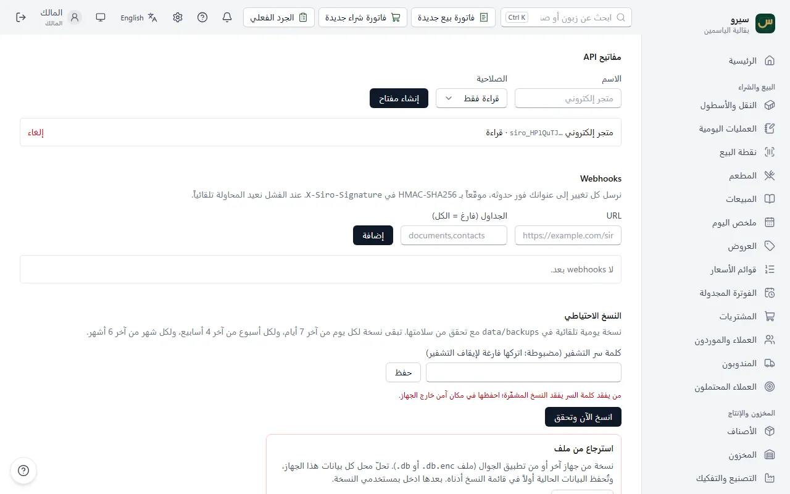

الإعدادات وطرق الدفع
أغلب الإعدادات تُضبط مرة واحدة. هذه أكثرها سؤالاً.
- الأقسام: إظهار قسم أو إخفاؤه
- طرق الدفع: شام كاش وسيرياتيل كاش والبطاقة
- الطابعة والدرج والميزان
- اسم المحل وشكل الفاتورة
- حقول خاصة بعملك
- الضرائب والرسوم
- الولاء وبطاقات الهدايا
- الربط مع برنامج آخر: مفاتيح API وWebhooks
- التقارير المجدولة
- المرفقات: صورة الفاتورة أو PDF
الأقسام: إظهار قسم أو إخفاؤه
افتح الإعدادات ← الأقسام وفعّل ما تحتاجه (التصنيع، المطعم، المندوبين…). لا يظهر القسم بعدها؟ قد يكون دورك لا يسمح به: اسأل المالك.
- قوالب جاهزة (بقالية، مطعم، ورشة، جملة، خدمات) تفعّل أقسام نوع عملك وإعداداته دفعة واحدة، ولا توقف شيئاً.

على الجوال: بيانات المحل ← الأقسام. أزرار الشاشة الرئيسية تتبع الأقسام المفعّلة (خريطة التطبيق).
طرق الدفع: شام كاش وسيرياتيل كاش والبطاقة
- افتح الإعدادات ← نقطة البيع.
- تحت طرق الدفع اكتب الاسم (شام كاش) واختر النوع محفظة إلكترونية.
- اترك رمز الحساب فارغاً واضغط إضافة. يُنشأ لها حساب خاص تحت النقدية (مثل 1103) ترى فيه رصيدها.


على الجوال: بيانات المحل ← طرق الدفع، بالخطوات نفسها.
تظهر خانتها في نقطة البيع: اكتب فيها ما دُفع بالمحفظة، والباقي نقدي. وتظهر في طريقة الدفع بفاتورة البيع والشراء، وفي الصندوق عند القبض من زبون أو الدفع لمورد وفي السندات، على الكمبيوتر والجوال. ولتجمعها مع البنك اكتب في رمز الحساب 1102. إيقاف طريقة لا يحذفها: يخفيها فقط. للدولار أو أي عملة أخرى اختر العملة: صندوق الدولار، والعملة غير الموجودة تُضاف من العملات المستعملة.
الطابعة والدرج والميزان
من الإعدادات ← نقطة البيع:
- طباعة الإيصال تلقائياً بعد كل بيع: اجعل طابعة الإيصالات هي الطابعة الافتراضية في ويندوز.
- سطر أخير على الإيصال: عبارة شكر أو رقم هاتف.
- تقريب النقدي في الصندوق: الفاتورة تبقى بمبلغها حتى القرش، أما ما يُقبض نقداً فيُقرَّب لأقرب فئة تختارها (مثلاً 0.25 أو 5 ليرات)، ويُقيَّد الفرق في حساب فروقات التقريب ويُطبع على الإيصال. يسري على كل أجهزة المحل.
- الدرج يُفتح مع الطابعة إن كان موصولاً بها (من إعداد الطابعة في ويندوز).
- باركود الميزان (يبدأ بـ 2، 13 رقماً): للأصناف الموزونة؛ اكتب في باركود الصنف رقمه على الميزان.

على الجوال: سطر أخير على الإيصال وتقريب النقدي في الصندوق في بيانات المحل ← طرق الدفع. طابعة الإيصالات والدرج والميزان على الكمبيوتر فقط؛ الجوال يرسل PDF أو يطبع على طابعة واي فاي.
اسم المحل وشكل الفاتورة
- الإعدادات ← قوالب الطباعة: الشعار والترويسة والتذييل وما يظهر على الفاتورة. الافتراضي لكل المستندات، وقالب نوع واحد (الفاتورة، السند…) يغيّر ما يختلف فقط. معاينة على آخر مستند يفتح آخر مستند من ذلك النوع بالشكل الجديد.
- البيانات القانونية: الإعدادات ← التوطين ← بيانات المنشأة القانونية: الرقم الضريبي ورقم السجل التجاري والعنوان والهاتف، ثم حفظ. تُطبع على المستندات حين تكون البيانات القانونية للمنشأة معلّمة في قوالب الطباعة (معلّمة من البداية)، وفي ترويسة التقارير، والرقم الضريبي على الإيصال.
- قبل الطباعة على الكمبيوتر: معاينة قبل الطباعة بجانب طباعة يفتح المستند ملف PDF كما سيخرج على الورق، بحجم الورق والهوامش، ومنه تطبعه.

على الجوال: بيانات المحل (السجل، الرقم الضريبي، العنوان، الهاتف) تظهر أعلى الفواتير والكشوف المرسلة، وبيانات المحل ← قوالب الطباعة تضبط القالب نفسه: العنوان على الورقة والترويسة والتذييل والشعار. الفاتورة والسند والكشف المرسلة PDF من الجوال تتبعه بالشعار وحجم الورق، والحقول المعلّمة يُطبع على الفاتورة تظهر فيها.
حقول خاصة بعملك
الإعدادات ← الحقول المخصصة: أضف حقلاً للأصناف أو العملاء والموردين أو المستندات (نص، رقم، تاريخ، قائمة اختيار، نعم/لا)، فيظهر في نماذجها على الكمبيوتر والجوال. الحقل إلزامي لا يُحفظ السجل بدونه، والحقل يُوقف ولا يُحذف.

على الجوال: بيانات المحل ← الحقول المخصصة.
الضرائب والرسوم
الإعدادات ← التوطين على الكمبيوتر، أو بيانات المحل ← الضرائب والرسوم على الجوال: اسم الضريبة ونسبتها وعلى ماذا (المبيعات أو المشتريات أو الاثنين). علّم تُخصم من المشتريات لضريبة القيمة المضافة.
- البرنامج لا يحمل أي نسبة جاهزة: أدخل النسبة من النص الرسمي النافذ، واكتب في السند القانوني رقم القانون أو المرسوم أو القرار.
- يسري من وحتى: الأيام التي تُطبّق فيها النسبة. كل فاتورة تأخذ النسبة السارية في تاريخها، فإذا تغيّرت النسبة أضف سطراً جديداً يسري من يوم التغيير واكتب للقديم تاريخ انتهائه: الفواتير القديمة ومرتجعاتها وتعديلها تبقى على نسبتها.
- علّم تحقّقتُ من النص الرسمي بعد مراجعته مع محاسب قانوني. النسبة غير المعلّمة تظهر قيد التحقق.
- التقريب: لأقرب قرش أو للأعلى أو للأدنى، كما ينص قرار الضريبة.
- كل فاتورة تحفظ النسب التي حُسبت بها، فتعديل نسبة لاحقاً لا يغيّر فاتورة قديمة ولا مرتجعها ولا طباعتها.
- الضرائب تخص الشركة كلها: تُضبط على جهاز واحد وتصل كل الأجهزة المتزامنة (الفروع والتابلت والجوال)، فتُحسب فواتيرها بالنسب نفسها. وكذلك بيانات الفاتورة القانونية، وإعدادات الولاء، والحقول الحساسة، والأدوار الملزمة بالتحقق بخطوتين.
الربط الإلكتروني مع الهيئة العامة للضرائب والرسوم (رمز QR والإرسال) غير متاح بعد، والبرنامج غير معتمد رسمياً للفوترة الإلكترونية.

الولاء وبطاقات الهدايا
الإعدادات ← الولاء على الكمبيوتر، أو بيانات المحل ← الولاء وبطاقات الهدايا على الجوال (أو من مجموعة البيع). الشرح كله في نقاط الولاء وبطاقات الهدايا.
الربط مع برنامج آخر: مفاتيح API وWebhooks
على الكمبيوتر فقط. للمبرمج الذي يربط سيرو بمتجر إلكتروني أو برنامج آخر. من الإعدادات ← التكامل:
- تحت مفاتيح API اكتب الاسم (متجر إلكتروني مثلاً)، واختر الصلاحية: قراءة فقط أو قراءة وكتابة، ثم إنشاء مفتاح.
- انسخ المفتاح فوراً: يظهر مرة واحدة فقط. أعطِه للمبرمج مع رابط «التوثيق» أعلى الصفحة: الأصناف والزبائن والموردون والمستندات والقيود والمخزون، وكل تغيير بالترتيب.
- مفتاح لم يعد يلزم: إلغاء بجانبه. يبقى في القائمة مشطوباً ولا يعمل.
- Webhooks: تحت Webhooks اكتب عنوان البرنامج الآخر في URL، وفي الجداول (فارغ = الكل) ما تريد منها (documents,contacts مثلاً)، ثم إضافة. يصله كل تغيير فور حدوثه موقّعاً بسرّ يظهر مرة واحدة فقط. إن لم يصل يعيد البرنامج المحاولة وحده، ويظهر عدد مرات الفشل بجانبه.
- مزامنة فرع مفتاح لربط كمبيوتر فرع، لا لبرنامج آخر.
- البرنامج الآخر يصل إلى هذا الكمبيوتر وهو يعمل؛ من جهاز آخر على الشبكة يحتاج اسمح بالوصول من الشبكة في الإعدادات ← المزامنة.

التقارير المجدولة
أضف عنواناً يستقبل ملخص المبيعات والأرباح والنقدية يومياً أو أسبوعياً أو شهرياً. على الكمبيوتر من الإعدادات ← التكامل، وعلى الجوال من بيانات المحل ← التقارير المجدولة: يرسلها الجوال حين يُفتح بعد السابعة صباحاً، وشارك ملخص أمس يرسله الآن عبر واتساب، على الكمبيوتر والجوال (على الكمبيوتر يُنسخ النص إن لم تظهر المشاركة، فالصقه في واتساب).
المرفقات: صورة الفاتورة أو PDF
- من صفحة الفاتورة.
- صورة أو PDF حتى 15 ميغابايت. يبقى الملف على الجهاز الذي أُرفق منه، والأجهزة الأخرى ترى أنه موجود.
على الجوال: مشبك الورق بجانب الفاتورة في فواتير البيع أو فواتير الشراء، أو المرفقات في صفحة المستند، ثم إرفاق ملف.